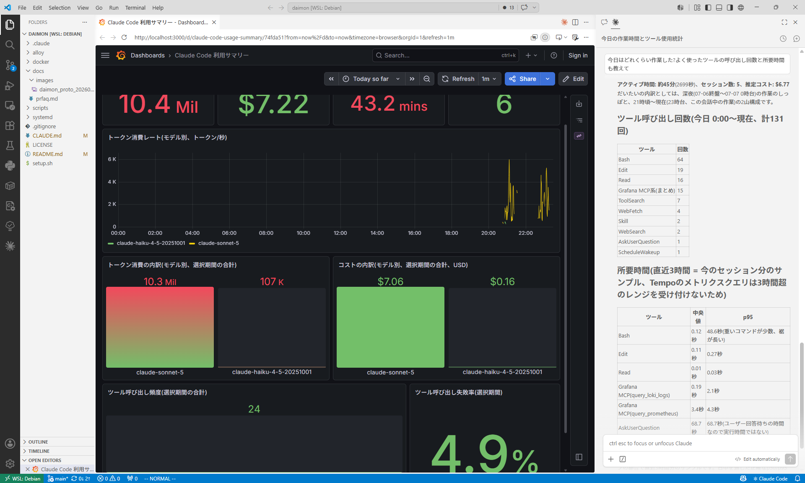

対話の記録、離席中や自律実行の実態、費やした時間とコスト、手直しをした場面、積み上げてきた実績—— これらすべてを、Claude Code 自身に自然言語で問いかけるだけで確認できるようにする、ローカル完結の自己観測ツールです。
Problem
Claude Code を使い込み、任せる範囲がバックグラウンドタスクやスケジュール実行にまで広がるほど、 その振る舞いを後から検証する責任も大きくなります。しかし今のところこの検証は簡単ではありません。
Solution
Claude Code 公式の OTel テレメトリを有効化してローカルの Prometheus / Loki / Grafana スタックへ流し込み、 会話全文を扱う専用の経路もあわせて用意。公式の Grafana MCP サーバーと専用 Skill を通じて、 実装の詳細を都度教える必要なく、自然言語で問い合わせられます。コストや実績のような値は、 ダッシュボードへのリンクを介して見やすく確認できます。

「今日はどれくらい作業した?」と聞くだけで、要約とダッシュボードが返ってくる(Claude Code v2.1.201 時点の実データ)。
5 つの価値
「Claude Code に何を任せ、それがどう働いたかを、後から確認できること」——この一つの行為が向く先によって、 5 つの価値として現れます。
カードをクリックすると、実際に問いかけて得られた応答のサンプルが開きます。
バックグラウンドタスクや cron 実行は、離れると Claude Code 自身も文脈を覚えていません。翌朝の新しいセッションからでも「昨夜どこまでやってくれたか」を聞くだけで確認できます。
問いさっき裏で走らせてたタスク、結局何をやってくれた?何か気になることはあった?
応答ドキュメント内の相互参照リンクを16箇所チェックし、壊れているものはありませんでした。作業中に見えた文字列を一瞬プロンプトインジェクションかと疑いましたが、実データを確認したところファイル自体には何も混入しておらず、ハーネスの通知を誤認しただけと判断しています。
「以前 X について相談した時どう決着したか」を、セッションをまたいで全文検索・要約させられます。加工されていない生の全文に立ち返れます。
問い前にツール呼び出し頻度の集計方法をどうするか相談した時、結局何に決めたんだっけ?
応答チャット側の頻度・所要時間分析は Loki の手組みクエリから Tempo TraceQL に移行しましたが、ダッシュボードのパネルはあえて Loki のまま残しています。TraceQL の集計クエリには3時間という時間範囲の上限があり、ダッシュボードの自由な期間指定と相性が悪かったためです。
どの作業は安心して任せられるようになったか、逆にまだ細かい指示が要る場面はどこかを確認できます。次のプロジェクトの判断材料になります。
問いこれまでの確認の質問、私はどれくらい提案通りに答えてる?
応答直近15日間の12回のうち、提案をそのまま採用したのは6回、他の選択肢を選んだのが2回、用意した選択肢のどれとも違う自由回答が4回(33%)でした。そのうち2回は提案の妥当性そのものへの異議でした。
「今日/今週/今月どれだけ使ったか」をチャット上の要約と、詳細を見るためのダッシュボードへのリンクで確認できます。
問い今日のコストはどれくらい?
応答ここまでで $1.15 です(ほぼ claude-sonnet-5 の利用分)。内訳はダッシュボードのリンクからご確認いただけます。
これまでのセッション数・トークン量・費やした時間の推移を確認できます。一人で進めてきた作業の積み重ねを、自分自身で実感するための価値です。
問いこれまで何セッション、どれくらい使い込んできた?
応答直近15日間で23セッション、累計アクティブ時間は約2時間41分でした。
想定利用シーン
「寝ている間に別セッションで走らせていたタスクを、翌朝あらためて別のセッションを開いてから『どこまでやってくれた?』と聞くのが楽しみになった」
— 想定利用者(自律実行機能を使い始めた個人開発者)
「先週相談してた設定変更、結局どっちに決めたんだっけ、と聞いたら該当のセッションを探し出して要約してくれた」
— 想定利用者(複数プロジェクトを掛け持ちする個人開発者)
「どの作業は安心して任せられるようになったか教えてもらって、次のプロジェクトでは最初から細かく指示すべき場面を先に見極められるようになった」
— 想定利用者(自律実行機能を使い始めた個人開発者)
「毎月のコストがどの作業に由来しているか聞いたら、要約と一緒にダッシュボードへのリンクが返ってきて、内訳をグラフで一目で確認できた」
— 想定利用者(コストを気にしながら使う個人開発者)
「一人で黙々と進めてきた作業だから誰も気づいてくれないけど、これまで何セッション、どれだけの時間使い込んできたか確認してみたら、地味に積み上げてきたんだなと実感できた」
— 想定利用者(長期間同じプロジェクトを進めている個人開発者)
Quick Start
git clone https://github.com/mahitotsu/daimon.git
cd daimon
./setup.shClaude Code を再起動すれば、次回のセッションから自然言語での問い合わせが使えるようになります。詳細な前提条件やセットアップ手順は README を参照してください。
FAQ
Claude Code を日常的に、複数のプロジェクト・複数セッションにわたって使い込んでいる個人開発者向けです。同じプロジェクトを長く続けている人、バックグラウンドタスクや cron・リモートトリガーなど見ていない間にも Claude Code が動く機能を使っている人ほど、価値が大きくなります。
ただし対象は自分が管理する端末で使う場合に限ります。会社貸与 PC や共有環境、顧客の機密情報を扱うプロジェクトでは、後述のプライバシー上の理由から推奨していません。暗号化・保存期間の上限・対象ディレクトリの除外といった緩和策を持たない設計を選んだ以上、個人が所有する環境での利用に絞っています。チーム/組織での利用統制、監査証跡、コンプライアンス対応も非スコープです。
根は一つです。「Claude Code に何を任せ、それがどう働いたかを、後から確認できること」。離席中・自律実行の振り返り、過去の対話の想起、手直し傾向の可視化は物語や判断材料としての性質が強いため、チャット上の自然言語での回答が中心になります。コスト・トークン消費の把握と積み重ねてきた実績の実感は、チャット上の要約と Grafana ダッシュボードへのリンクを組み合わせた体験になります。
Linux(WSL2 含む)で systemd --user が使え、かつ Docker が動く環境が必要です。詳細な前提条件は README の「対象環境」を参照してください。
ここが最も重要な注意点です。 Claude Code の公式テレメトリは、ユーザープロンプトやツールの引数・実行結果本体が外部に出ないよう既定でガードされています。daimon はセッションの JSONL ファイル(会話全文・ツールの入出力を含む)を直接ローカルの Loki に再保存する経路を持っており、この公式ガードを実質バイパスする設計です。暗号化はされず、保存期間も無制限(手動削除のみ)です。
単一ユーザーが自分のローカル環境で使う前提であれば実害は限定的ですが、会社貸与 PC や共有環境、顧客データ・機密情報を扱うプロジェクトでは導入を推奨しません。有効化・無効化は ~/.claude/settings.json の env でいつでも切り替えられます。
./setup.sh を実行してから Claude Code を再起動するだけです。再実行しても安全(冪等)です。ただし systemd --user はログインセッションが途切れると停止するため、バックグラウンドでも収集を継続したい場合は別途 loginctl enable-linger の設定が必要です(root 権限が要るため自動化していません)。
セッションの JSONL tail 経由の全文検索は元データをそのまま保持しているためトランケートなしで検索できます。一方、OTel 経由のログは集計用途向けで、内容はサイズ上限つきでトランケートされます。どちらを使うべきかは Skill が自動的に判断します。
Claude Code 公式の OTel メトリクスをそのまま使っているため、公式 CLI が把握している値と一致します。ただしメトリクス名や属性はバージョンによって変わりうるため、応答時に「このバージョンで確認した」という前提を Skill 側で明示するようにしています。